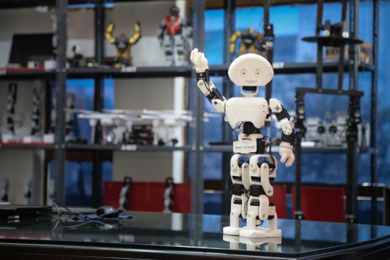

Mis opciones universitarias después del Bachillerato
Cuando acabe el Bachillerato quiero estudiar algo relacionado con la informática. En esta web comparo mis tres opciones, que son tres grados de la Facultad de Informática de la Universidade da Coruña (UDC), en el Campus de Elviña:
- Grado en Ingeniería Informática
- Grado en Inteligencia Artificial
- Grado en Ciencia e Ingeniería de Datos
Los tres duran cuatro cursos y tienen 240 créditos ECTS, pero no son iguales. Aquí explico en qué se parecen, en qué se diferencian y qué salidas tiene cada uno.
Mis tres opciones
Ingeniería Informática
Es el grado más general. Enseña a programar y a crear y mantener aplicaciones y sistemas informáticos.
Ver ficha Ver salidas Ver en la CiUG
Inteligencia Artificial
Se centra en crear sistemas que aprenden de los datos y hacen tareas de forma automática.
Ver ficha Ver salidas Ver en la CiUGCiencia e Ingeniería de Datos
Mezcla informática, matemáticas y estadística para guardar y analizar grandes cantidades de datos.
Ver ficha Ver salidas Ver en la CiUG